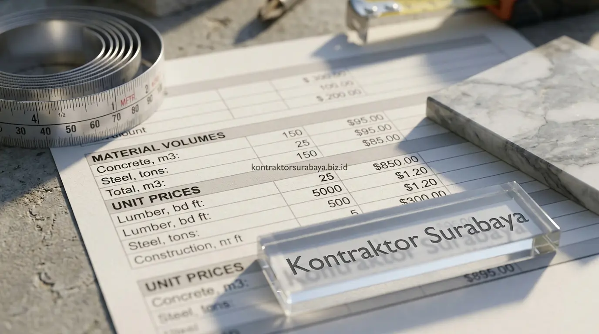

Memulai proyek pembangunan rumah tinggal maupun bangunan komersial adalah langkah finansial besar yang membutuhkan transparansi penuh sejak lembar kesepakatan pertama. Banyak pemilik proyek di Surabaya, Sidoarjo, dan Gresik merasa cemas ketika menerima proposal harga dari kontraktor: apakah angka yang tercantum sudah mencakup seluruh kebutuhan fisik bangunan, ataukah ada pos pekerjaan tersembunyi yang sengaja dihilangkan untuk memancing persetujuan di awal?
Dokumen Surat Penawaran Harga (SPH) adalah benteng perlindungan anggaran utama Anda. Memahami cara membaca SPH kontraktor secara kritis memungkinkan Anda memverifikasi setiap rupiah yang dikeluarkan, mengevaluasi kewajaran harga material, dan terhindar dari jebakan biaya siluman (hidden cost) di tengah perjalanan proyek.
1. Fungsi SPH sebagai Dasar Kesepakatan Sebelum Kontrak
Surat Penawaran Harga (SPH) merinci estimasi total biaya, jadwal waktu pelaksanaan, dan rincian cakupan pekerjaan (scope of work) yang ditawarkan kontraktor sebelum kedua belah pihak menandatangani Surat Perjanjian Kerja (SPK) secara resmi di hadapan notaris atau bermaterai.
Dokumen ini menjadi acuan hukum awal yang menentukan apa saja item yang akan dikerjakan, dengan spesifikasi merek material apa, volume berapa, dan harga satuan berapa. Memahami setiap bagian SPH secara cermat membantu klien menghindari kesalahpahaman fatal mengenai batas cakupan pekerjaan yang sebenarnya disepakati, sehingga tidak ada saling lempar tanggung jawab saat proyek berjalan di lapangan.
2. Komponen yang Harus Ada dalam SPH yang Transparan
Rincian volume pekerjaan per item, harga satuan yang jelas, spesifikasi material yang digunakan, dan ketentuan skema pembayaran adalah empat komponen mutlak yang wajib ada dalam lembar SPH profesional:
- Rincian Volume Pekerjaan per Item (Bill of Quantities): Menjabarkan secara detail satuan ukur (m¹, m², m³, kg, unit, atau titik) untuk setiap tahapan, mulai dari pekerjaan galian tanah, pembesian beton, pemasangan bata, hingga instalasi sanitair.
- Harga Satuan yang Jelas (Analisa Harga Satuan Pekerjaan): Memisahkan komponen upah tenaga kerja dan harga belanja material, sehingga klien dapat menilai kewajaran tarif secara objektif.
- Spesifikasi Merek dan Tipe Material (Spesifikasi Teknis): Mencantumkan merek semen (misal Semen Gresik), besi beton SNI ulir/polos, tipe bata ringan (Grand Elephant/Citicon), hingga merek cat dan sanitary (Toto/American Standard) agar tidak ada pengoplosan mutu material.
- Ketentuan Skema Pembayaran Berbasis Progres: Menjelaskan persentase uang muka (DP), jadwal termin pembayaran berdasarkan persentase capaian fisik di lapangan, serta retensi pemeliharaan.
3. Cara Mengecek Kesesuaian Volume Pekerjaan dengan Gambar Kerja
Membandingkan angka volume pada SPH dengan perhitungan luas atau panjang elemen bangunan pada gambar kerja Detail Engineering Design (DED) membantu memverifikasi apakah volume yang diajukan kontraktor sudah akurat sesuai kondisi aktual tapak.
Klien yang memiliki dokumen gambar kerja arsitektur dan struktur dapat melakukan validasi silang sederhana. Sebagai contoh, menghitung luas dinding bata berdasarkan denah (panjang keliling dinding dikalikan tinggi plafon dikurangi bukaan pintu/jendela), lalu mencocokkannya dengan volume m² dinding pada SPH. Bila ditemukan selisih volume yang melonjak di atas 15–20% tanpa alasan struktural yang logis, Anda berhak meminta klarifikasi teknis kepada pihak estimator sebelum menyetujui kontrak.
| Kriteria Penilaian | SPH Transparan (Standar Kontraktor Resmi) | SPH Gelondongan (Pemborong Berisiko) | Tingkat Keamanan Anggaran |
|---|---|---|---|
| Format Rincian Biaya | Tersusun rapi per sub-pekerjaan dengan volume & satuan (m², m³, kg) | Hanya total nominal borongan (Lump Sum) per lantai/ruang | Format BQ terperinci mencegah manipulasi tagihan. |
| Spesifikasi Material | Mencantumkan merek resmi, tipe, ketebalan, dan sertifikasi SNI | Hanya menuliskan "spesifikasi standar / setara" tanpa merek pasti | Merek tertulis mengikat kontraktor menyediakan mutu asli. |
| Skema Termin Bayar | Pencairan termin terikat laporan progres fisik mingguan/bulanan | Minta DP besar di awal (40–50%) atau minta uang mingguan tanpa opname | Pencairan berbasis opname melindungi dana klien dari risiko kabur. |
| Garansi Pemeliharaan | Tersedia klausul retensi 5% dan masa garansi tertulis 3–12 bulan | Tanpa garansi tertulis resmi pasca serah terima kunci | Uang retensi menjamin perbaikan cacat minor ditangani tuntas. |

4. Tanda-Tanda SPH yang Berpotensi Menyembunyikan Biaya Siluman
Harga yang disajikan terlalu global tanpa rincian, tidak mencantumkan spesifikasi merek material, klausul perubahan harga yang tidak jelas, dan item pekerjaan penting yang sengaja tidak tercantum adalah empat tanda bahaya (red flags) dalam proposal penawaran:
- Harga Ditulis Global Borong Kerja: Format gelondongan menyulitkan klien mengaudit komponen biaya riil, membuka peluang pemotongan spesifikasi di lapangan.
- Kata "Material Setara" Tanpa Batasan: Klausul ambigu ini sering dijadikan alasan oleh pelaksana untuk mengganti keramik granit grade A dengan keramik KW 3 saat harga material naik.
- Klausul Perubahan Harga Sepihak: Terdapat syarat bahwa kontraktor dapat menaikkan harga tagihan sewaktu-waktu tanpa persetujuan tertulis pemilik proyek.
- Pekerjaan Kritis Ditinggalkan: Pos pekerjaan krusial seperti pembuangan puing bongkaran, sambungan listrik PLN/pipa PDAM baru, atau waterproofing dak sering tidak dimasukkan ke dalam SPH awal, lalu ditagihkan sebagai "pekerjaan tambahan" berharga mahal di tengah proyek.
5. Bagaimana Membandingkan SPH dari Beberapa Kontraktor Secara Adil?
Membandingkan SPH dari beberapa kontraktor (tender comparison) perlu memastikan cakupan pekerjaan dan spesifikasi material yang ditawarkan setara (apple-to-apple comparison), bukan hanya sekadar membandingkan angka total akhir di baris paling bawah.
Dua penawaran dengan selisih harga total hingga puluhan juta rupiah sering kali disebabkan oleh perbedaan mendasar: kontraktor A sudah memasukkan instalasi pipa AC tanam, sakelar panasonic, dan genteng keramik glasur bergaransi, sedangkan kontraktor B hanya menawarkan atap seng spandek dan fitting lampu standar tanpa kabel instalasi lengkap. Lakukan penyetaraan pos pekerjaan (tabulasi komparasi) sebelum memutuskan penawaran mana yang memberikan nilai investasi (value for money) terbaik.
6. Klausul Penting yang Perlu Diperhatikan dalam SPH
Skema pembayaran berbasis progres fisik, ketentuan perubahan pekerjaan (change order), masa garansi pemeliharaan, dan sanksi denda keterlambatan adalah empat klausul pengaman yang wajib disepakati:
- Skema Pembayaran Berbasis Progres (Milestone): Memastikan pencairan dana tahap berikutnya hanya dilakukan setelah pekerjaan tahap sebelumnya diverifikasi selesai melalui Berita Acara Progres Lapangan.
- Ketentuan Change Order (Pekerjaan Tambah-Kurang): Menegaskan bahwa setiap penambahan atau pengurangan item pekerjaan harus dihitung berdasarkan harga satuan SPH awal dan disetujui tertulis (Addendum) sebelum dikerjakan.
- Masa Garansi Struktur & Pemeliharaan: Memberi kepastian tertulis bahwa kontraktor bertanggung jawab penuh memperbaiki kebocoran atap, retak plesteran, atau cat mengelupas selama masa retensi.
- Klausul Denda Keterlambatan (Liquidated Damages): Mencantumkan kompensasi keterlambatan per mil (misal 1‰ per hari dari sisa kontrak) bila proyek terlambat tanpa alasan force majeure.
7. Kesalahan Umum saat Membaca SPH dari Kontraktor
Hanya tergiur angka total paling murah, enggan menanyakan istilah teknis yang tidak dipahami, terburu-buru menandatangani karena tertekan diskon sementara, dan tidak meminta dokumen pendukung adalah empat kekeliruan fatal yang kerap merugikan pemilik rumah:
- Hanya Melihat Angka Termurah: Penawaran yang terlampau murah di bawah harga pasar hampir pasti diiringi pemangkasan kualitas struktur atau berujung proyek mangkrak.
- Tidak Mengklarifikasi Istilah Teknis: Istilah seperti mutu beton, pembesian tumpuan/lapangan, dan ketebalan spesi plesteran harus ditanyakan fungsinya secara transparan.
- Terburu-buru Menandatangani SPK: Berikan waktu 2–3 hari bagi diri Anda atau konsultan independen untuk mereview kelayakan angka penawaran.
- Mengabaikan Reputasi & Legalitas Kontraktor: SPH yang rapi harus didukung oleh legalitas badan usaha resmi (PT/CV) dan portofolio proyek fisik nyata yang dapat disurvei langsung.
"Transparansi Surat Penawaran Harga bukan tentang mencari angka paling murah di atas kertas, melainkan membangun kepastian bahwa setiap jengkal bangunan Anda didanai secara presisi tanpa ada biaya siluman di kemudian hari."
Memahami setiap komponen dalam SPH secara menyeluruh membantu Anda membuat keputusan yang matang dan aman sebelum proyek dimulai. Konsultasikan review penawaran harga Anda atau dapatkan dokumen RAB transparan pada halaman jasa RAB & estimasi biaya Surabaya, pelajari tahapan pembangunan pada halaman kontraktor rumah tinggal kami, atau kenali lebih dekat integritas tim kami pada halaman tentang kami.